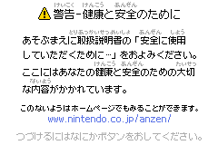
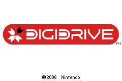

bit Generations - Digidrive (Japan) (En)
Stateless / Passcode 💾 MultiBoot 🎮 4P Link 📡 Wireless
Cartridge Identity
- Game Code
BVHJ(FamilyBVH)- Header Title
DIGIDRIVE- Maker / Revision
01/ rev0- ROM Size
- 16.0 MiB (16,777,216 B)
- Save Media
None / Unknown- SHA-256
b1038ab5c1fc7f2a2f32009853f4dcec3a6cefa3309a63f007b3fbc03eb3efe9- Engine / SDK Group
comm-002(145 families)
Screenshots


Niche & Rare Accessories
Detected niche/rare GBA accessory support: 🔌 Wireless Adapter (RFU_V1026).
Full 343-ROM corpus breakdown in the Cartridge Hardware & Niche Accessories Reference · auto-detected from ROM bytes via
gbakit inspect.
- Wireless Adapter (RFU_V1026)
- Nintendo Wireless Adapter (
AGB-015) SDKRFU_V1026+RFU-MBOOT
Link Cable & Multiplayer Communications
This title contains detected communication capabilities: 💾 MultiBoot 🎮 4P Link 📡 Wireless.
Detailed protocol specifications, SIO registers, Joybus commands, and MultiBoot sequences are documented in the Link & Multiplayer Reference.
- Multi-Player SIO (4P)
- 16-bit ring network · SIOCNT (
0x04000128) literals:0x044390,0x045264,0x045290· SIODATA32/SIOMULTI0 (0x04000120) literals:0x044384,0x044448,0x047ecc - Nintendo Wireless Adapter
- AGB-015 RFU driver signature
RFU-MBOOTat offset0x051c3c - Nintendo Wireless Adapter
- AGB-015 RFU driver signature
RFU-MBOOTat offset0x0847a0 - Nintendo Wireless Adapter
- AGB-015 RFU driver signature
RFU-MBOOTat offset0x11265c - Nintendo Wireless Adapter
- AGB-015 RFU driver signature
NINTENDOSio32IDat offset0x0847ac - Nintendo Wireless Adapter
- AGB-015 RFU driver signature
NINTENDOSio32IDat offset0x112668 - Single-Cart MultiBoot
- Single-Cartridge MultiBoot (Download Play) client/server handler · Thumb SWI 0x25 (
0xDF25):0x12277a,0x1b8386,0x1b8b10,0x25cba0· SDK signatures:MBOOTat0x051c40
Cartridge Storage Architecture: Stateless / Passcode
Zero non-volatile battery hardware: This cartridge PCB contains ROM only (no SRAM, Flash, or EEPROM chips). Progression is preserved via on-screen passcodes or session-only gameplay. No
.sav file is generated or required.
ROM Assets, Compression & Audio
- BIOS Compression
- LZ77 (
0x10): 114 streams · RLE (0x30): 0 streams - ROM Pointer Tables
- 9 tables (2 pointing to validated compressed streams)
- SDK Backup Tags
SRAM_F_V103
Asset Map (formatkit.asset-map.v1)
Download BVHJ-r0-b1038ab5c1fc7f2a.asset-map.json.gz (48,997 B (47.8 KiB)) Verified PASS · 0.40% coverage
| Metric | Bytes / Value | Entries |
|---|---|---|
| Identified | 63,753 B (62.3 KiB) (0.38%) | 516 |
| Mapped | 0 B (0.00%) | 0 |
| Opaque | 3,072 B (3.0 KiB) (0.02%) | 1 |
| Unknown | 16,710,391 B (15.94 MiB) (99.60%) | 509 |
| Total ROM Size | 16,777,216 B (16.00 MiB) | 1,026 |
| Coverage % | 0.40% | — |
| Entries w/ Code Refs | 532 / 1,026 (51.85%) | — |
Top Identified Formats: gfx.gba-palette (478 · 42,656 B (41.7 KiB)) · compress.bios-lz77 (37 · 20,905 B (20.4 KiB)) · gba.rom-header (1 · 192 B)
Largest unknown Extents (Headerless / Custom Asset Candidates)
| Offset | Size | Shannon Entropy | Code Refs |
|---|---|---|---|
0x00A7E8A4 | 5,642,328 B (5.38 MiB) | 0.028 bits/B | 0 |
0x00358654 | 2,577,336 B (2.46 MiB) | 6.587 bits/B | 0 |
0x005CDA2C | 1,775,624 B (1.69 MiB) | 6.254 bits/B | 0 |
0x00806820 | 1,174,580 B (1.12 MiB) | 6.782 bits/B | 0 |
0x002802C8 | 611,996 B (597.7 KiB) | 6.196 bits/B | 0 |
gzip -dk BVHJ-r0-b1038ab5c1fc7f2a.asset-map.json.gz && gbakit map verify rom.gba BVHJ-r0-b1038ab5c1fc7f2a.asset-map.json
gbakit assets export rom.gba --asset-map BVHJ-r0-b1038ab5c1fc7f2a.asset-map.json -o out/Text, Fonts & Scene Data
- Primary Text Encoding
- Compressed / custom-encoded text (
12ASCII strings) - Font & VWF Indicators
- VWF Width Table 1bpp Font · BIOS SWIs: BitUnPack
0x10:6· LZ770x11/12:12· Huffman0x13:16· RLE0x14/15:6 - Scene & Packaging
7ROM pointer tables (≥32 entries,0≥200) ·3relativeu32TOCs ·87OAM metasprite hits
Hardware MMIO Subsystems
ppu_display0x8003230,0x8003f24,0x80040a8,0x802f40c